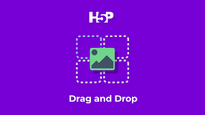

Responsive Template Presentation
Your home page already highlights mobile responsive templates, making device-friendly layouts a clear part of the product message.
Nexlance brings together editable website templates, business-focused plans, dashboard workflows, secure hosted checkout, and protected template access. This page now highlights only the product areas already visible across your website.
Your site already showcases templates for portfolio, business, blog, startup, photography, and store-style use cases. This makes templates one of the clearest product strengths in the current Nexlance experience.
Instead of promising tools that are not present yet, this section stays focused on what the website actually supports today: choosing a template, customizing it, and moving toward launch.


Nexlance is not only presenting website templates. The project also includes a dashboard experience with its own navigation, quick actions, settings panels, trial state, and upgrade prompts.
That makes the dashboard one of the most important real features on your site, especially for teams that need a place to manage work after a website goes live.
Your dashboard navigation already exposes the operational parts of the product: clients, team, invoices, services, reports, and project-related actions. These are the kind of features that make the platform feel useful for actual business work.
This page now reflects those existing modules directly instead of drifting into categories that are not part of the current product.


Analytics is already part of the public product story on Nexlance. The home page highlights an analytics dashboard, pricing mentions basic and advanced analytics, and the dashboard settings include analytics preferences.
Because these pieces are already present in your codebase and UI, analytics deserves to stay as a core feature on the page.
Nexlance already includes a hosted checkout selection flow for plan purchases, with Stripe and Polar presented as the two gateway choices. That is a real product capability and should be represented clearly here.
This keeps the feature page aligned with the current purchase journey users see on pricing and template access flows.


The home page and related scripts already include a dedicated template access flow. Users can continue through Stripe, continue through Polar, or unlock access through a valid license key.
This is one of the most distinctive capabilities in your project, so the feature page now gives it proper attention.
These supporting features are already reflected in your pages, plans, or dashboard experience.
Your home page already highlights mobile responsive templates, making device-friendly layouts a clear part of the product message.
Plus, Pro, and Business each describe different access levels for dashboard tools, template editing, and broader product usage.
The dashboard already provides direct links for invoices, clients, reports, settings, and other frequent tasks.
The current experience includes active trial messaging, upgrade prompts, and clear next steps for moving into paid access.
Appearance, privacy, notifications, and account controls are already represented inside the dashboard settings system.
Visitors can move from templates to pricing to checkout to account or access flows in a way that already feels connected across the website.
This summary uses the access ideas already shown in your pricing and home-page plan descriptions.
| Feature Area | Plus | Pro | Business |
|---|---|---|---|
| Dashboard access | Limited or trial-based | Focused on templates | Full dashboard access |
| Editable templates | Basic access | Included | Included |
| All template access | Selected or limited | Included | Included |
| Clients, invoices, services, team | Not the main focus | Not the main focus | Included |
| Analytics visibility | Basic | Basic to plan-linked | Advanced |
| Hosted checkout gateways | Stripe / Polar | Stripe / Polar | Stripe / Polar |
| License-key template unlock | Available | Available | Available |
Browse templates, review the plans, and move into the dashboard or checkout flows that are already part of the current Nexlance experience.